WalkHero
Be a hero: walk every day
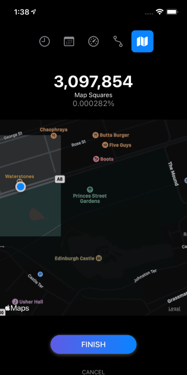 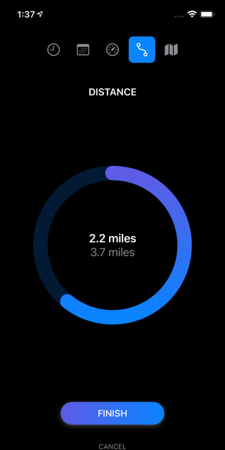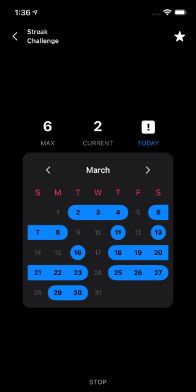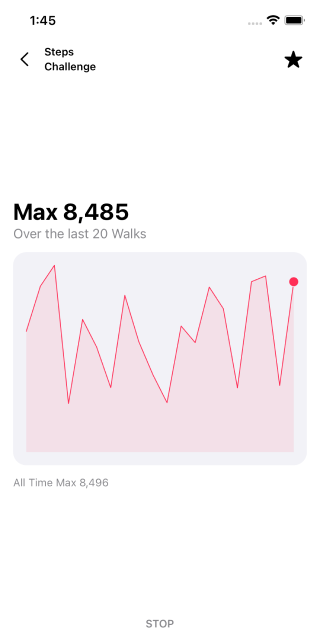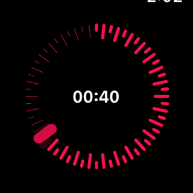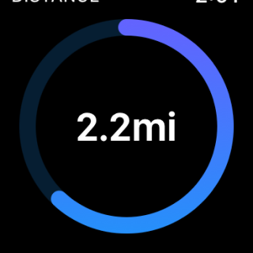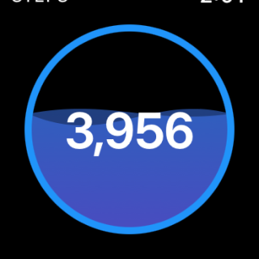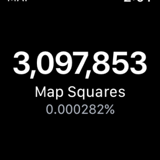
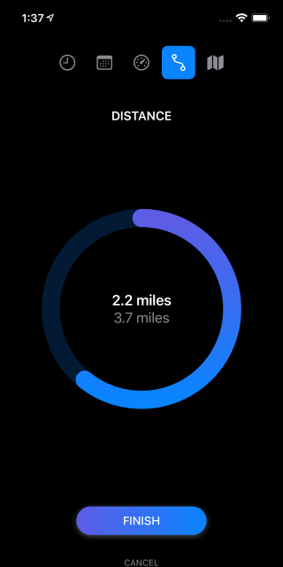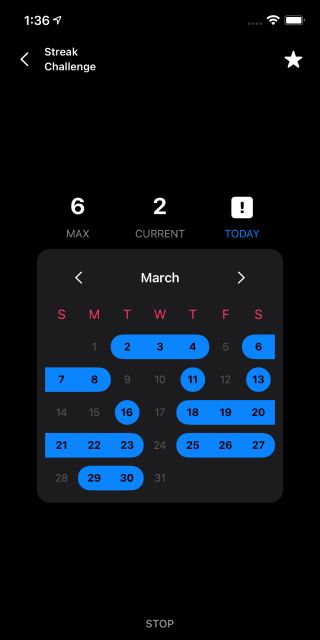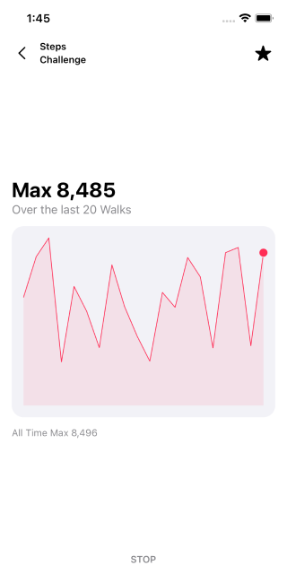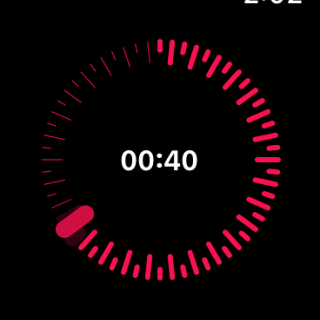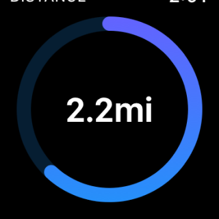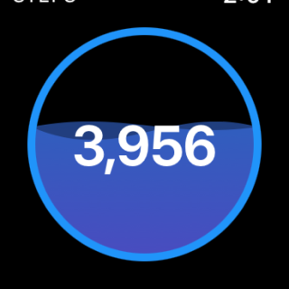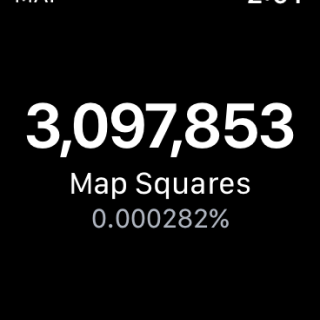
A walking app made into a Game
WalkHero is an app for those walking enthusiasts out there.
If you want to have a motivation to go out every day and take a short walk, specially during current times with lock downs and social contact limited, WalkHero is for your.
With WalkHero you can keep track of your walking streak, you can visualise in a map what areas of your surroundings you have already walked and how much of your city you have still to walk around; don't limit yourself, you have the whole world to discover.
WalkHero also helps you to keep track of your walking distance and the amount of steps per walks, so you can challenge yourself and improve over time.
You can also challenge your friends on Game Center.
You can also become a hero by walking every day.
It is possible to lead a healthier life without having to worry too much about it.
Disclaimer
1.
WalkHero makes use of Apple Health App to access your step count and distance walked, and while you can install WalkHero on your iPad, you won't be able to track your steps and distance as iPad doesn't have Apple Health App, but you will still be able to access the map and the streak calendar. More over, if you use WalkHero on an iPhone or an Apple Watch, it will be possible to visualise your step count and distance walked on iPad as they will be synchronised.
2.
In order to provide an accurate map you can optionally allow WalkHero to access your locations always, even when the app is not active. WalkHero won't try to access your location unless there is an active Walk in progress. However this might require a big amount of battery from your device and decrease your battery life. You can change how often WalkHero should access your location directly on the Settings App.
3.
WalkHero only keep track of the walks you actively initiate within the WalkHero app. Any activity or workout initiated outside of WalkHero app is not considered or kept track of.
Features
- Available on iPhone, iPad and Apple Watch
- Walk history
- Walking timer
- Walking map, see what areas of the world you haven't walked yet
- Step counter
- Distance counter
- Performance charts
- Streak calendar
- Post your best scores and challenge friends on Game Center
- Accessing your health info directly from Apple Health App
- Synch among all your devices with iCloud
Pricing
- No accounts
- No ads
- No subscriptions
- No tracking
- No data sharing with anyone
- No connecting to any server
- No remembering anything
- Optional one time In-App Purchase
Privacy Policy
This app is not tracking you in anyway, nor sharing any information from you with no one.
Whatever you do with this app is up to you and we don't want to know about it.
Location
When you start the Map Challenge on WalkHero you will be prompted to grant access to your location. This permission is optional and will help WalkHero to keep track on what parts of the world you walk, but if you decide not to grant access to your location you will still be able to use the rest of the app without any restriction. Furthermore you can change and update this permission at any time on the Settings App.
WalkHero will only try to access your location while a Walk is in progress.
Your location information will never leave your device and will never be shared with anyone, not even us, the developers of WalkHero will know where you are.
Health
When you start the Steps Challenge or the Distance Challenge you will be prompted to grant access to your information on the Apple Health App. This permission is optional and is only meant to help WalkHero keep track and count your steps and the distance traveled while you walk, but if you decide not to grant access to them you will still be able to use the rest of the app without any restriction.
WalkHero will never write or update your information on the Apple Health App, will also never try to access any sensitive or personal information.
Your step count and walking distance will never leave your device and will never be shared with anyone.